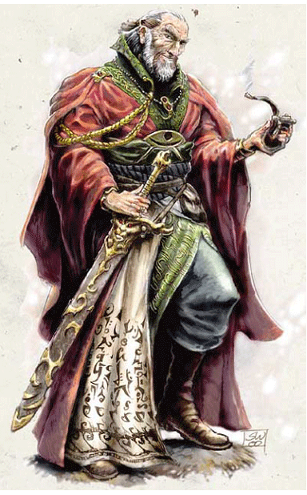
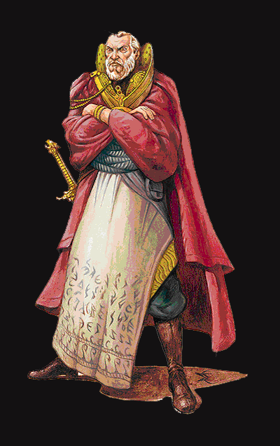

YY：这里有两个版本，分别出自FRCS和ELH

伊尔明斯特(Elminster)：
种族：人类男性，密斯特拉的选民
职业等级：1级战士/2级游荡者(就是“盗贼”了)/3级牧师(魔法女神蜜斯拉的牧师)/20级巫师/5级大法师/4级高阶职业；
（黯精灵注：其实伊尔明斯特的实际巫师等级只升到14级，说他是20级巫师是由于他利用高阶奖励的效果使自己使用巫师能力的时候相当于20级的水平，所以，他作为巫师的生命骰只按14级巫师的14d4来算。）
挑战级别：45；
体型：中等体型类人生物（人类）；
生命骰（HD）：1d10＋2d6＋3d8＋14d4＋140；（总生命值219；）
(黯精灵注：这个HP值相对于法师而言非常厉害了，在博得里31级的法师总HP才81左右，即使和宠物定了契约也才94左右，这也就意味着，只要稍微受一点伤害，HP降到90以下，就到了POWER WORD：STUN的射程之内，对方抬手一个字就能让你定身4轮!要是一不小心中了个中小型的伤害法术，HP弄到60以下，那更是不得了:POWER WORD: KILL......而伊尔明斯特明显就没有这个忧患，羡慕啊......他219的HP大概相当于博得里一般40级战士的水平了。)
优先加权值：＋10；
速度：30尺；
防护等级（AC）：29（接触17，措手不及25）；
(黯精灵注：换算过来，大概相当于博得2里的AC=-9左右，虽然和博得2里战士动辄-10+、-20+的AC没得比，不过作为一个法师而言，是很不错的!)
攻击附加值：＋17/＋12/＋7；近身（1d8+6/19-20，雷鸣剑＋5）或＋15/＋10/＋5远程接触（通过法术）；
特殊攻击：偷袭＋1d6，
驱退亡灵：每日6次；
特殊能力：大法师奥术神化，选民免疫力，选民类法术能力，魔法探测，体质属性提升，智力属性提升，高阶奖励，规避，奥术火焰；
法术抗性（MR）：21；
阵营：叛逆善良；
(黯精灵注：好象被遗忘国度里最厉害的人大多是这个阵营，著名的崔斯特也是叛逆善良。)
豁免判定：坚忍＋17，反射＋13，意志＋17；
(黯精灵注：在第3版ADND规则里，用这3项代替了原来的5项SAVE THROW，换算成博得之门里的数据，每项SAVE THROW大约是-2～+2左右，也是相当强的，基本都能豁免过去)
属性：
力量13，
敏捷18，
体质24，
智力24，
知觉18，
魅力17；
[黯精灵注：这个是伊尔明斯特经过后天努力以后的数值，他的体质由于选民的奖励而加了10，天生体质只有14；他的智力天生是18，用许愿术弄到24； ——这样扣一下，他的原始天生属性就变成13/18/14/18/18/17，玩过博得之门系列的朋友可以看出来，即使在经过扣除以后，这样的天生属性也是相当惊人的：总值居然达到了98! 在博得系列游戏开始时用骰子决定属性大家都做过吧？创造人类法师的时候，要弄到总值90以上都是相当困难的了，黯精灵过去用的人类CONJURER总值才达到93，现在使用的HALF-ELF WILD MAGE半精灵狂野法师，总值也才97。(当然是没有作弊也没有加辅助程序的正常投骰子)]
身高：6尺2寸。
(黯精灵注：换算成国际单位大概是1米88左右，和樱木花道一样高，弹跳好的话扣篮是没有什么问题了......^^)
技能与特技：
· 魔法奥术类： 法术知能＋29，集中精神＋34(黯精灵注：这个值和体质有关，它越大，则施展法术的时候越不容易被打断)，手艺（法杖），手艺（神奇物品），铸戒，技能强化（法术知能），法术强化（魅惑系），法术强化（塑能系），法术升级，优先改善，英雄幸运，撰写卷轴，法术穿透，法术倍效；
· 物理技巧类： 攻守兼备，警觉，平衡＋6，攀爬＋5，隐藏＋8，胁迫＋11，方向感＋6，跳跃＋5，听觉＋13，无声移动＋8，开锁＋6，表演（舞蹈）＋ 6，骑乘＋8，占察＋27，搜寻＋9，察觉动机＋11，察辨＋14，游泳＋5，翻腾＋5；驯养动物＋7，配药＋27，医护＋8；
·精神意识类： 知识（奥秘）＋27，知识（地理）＋22，知识（历史）＋17，知识（地域文化）＋17，知识（自然）＋17，知识（贵族）＋17，知识（位面）＋22，知识（宗教）＋12，解读文字＋9，交际＋6；
特殊能力：
使用“奥术火焰”；(黯精灵注：这个是大法师技能奖励的一种，将已经记忆的法术转化成火焰攻击，对方的元素类防御力对这种火焰无效，攻击力由用来转化的法术等级来决定)；
大法师奥术神化：魔法之手，元素掌控，抗魔掌控，法力增长＋4（总计）；
选民免疫力：伊尔明斯特对思想探测、湮灭、伊瓦尔德黑色触手、痴愚、死亡之指、火球、魔法飞弹、日炙和时间停止术，以及可造成相同效果的攻击完全免疫；
选民类法术能力（均为每日1次）：驱魔，低级钢铁护卫，看穿隐身，变形，辛布尔医疗转换术（将已准备好的法术转为医疗术，每法术等级医疗2点生命值），蛛攀，无错传送，雷电枪，真实视觉；
魔法探测（超自然能力）：视野内；
体质属性提升：密斯特拉选民模板使伊尔明斯特体质＋10（黯精灵注：伊尔明斯特的天生体质是:14，成为选民以后变成24!）；
智力属性提升：伊尔明斯特以许愿术提升智力属性，他智力属性的天生奖励是＋4（黯精灵注：也就是说伊尔明斯特的天生智力是:18，经过许愿术提升以后变成24!）；
高阶奖励：施法改善×4，6个巫师有效等级和5个大法师有效等级；
每日可用牧师神术：
LV1:4
LV2:4
LV3:3
基本困难等级＝14＋法术等级，塑能系与魅惑系法术为16＋法术等级；领域：魔法（当使用法术触发与法术就绪物品时等同于26级巫师），法术（当进行集中精神与法术知能测定时＋2奖励）；施法等级3级。
每日可用巫师法术：
LV 1:4
LV 2:6
LV 3:6
LV 4:6
LV 5:5
LV 6:4
LV 7:5
LV 8:3
LV 9:3
LV10:3
LV11:1
LV12:1
LV13:1
LV14:1
基本困难等级＝21＋法术等级，塑能系与魅惑系法术为23＋法术等级；施法等级25级；
持有物品：
防护戒指＋3，天然装甲护身符＋5，防御护腕＋7，回复生命戒指，法术抗性斗篷，雷鸣剑＋5，伊尔明斯特的永远冒烟的烟斗；
[作为一个强大的巫师，伊尔明斯特掌握着数之不尽的资源，只要有时间，他能找到或造出所需的几乎所有物品（神器除外）]
人物简介：
就像曾经是他学生的Vangerdahast一样，这名年高德勋的魔法师终于开始显得有点真的老了，他开始喜欢沉溺于一些回忆的幻想中，看到一些早已经消逝的人或者是某个地方。作为蜜斯拉的选民中最强大的一个，伊尔明斯特现在已经很少直接去面对那些敌对的势力，而是更倾向于通过一些年轻力壮的英雄们去完成任务。[黯精灵注：具体的方式比如说，就像在博得之门1代里那样：冷不丁地从什么角落里冒出来，再用莫名其妙的古英文(中文版里就是用让人觉得恶土的、满是语病的、文白杂揉的文言文)向主角提供一些谁都知道的建议，随后就遁得无影无踪，让人油然产生一种虐待老苍蝇的欲望又无处发泄......]
这名目前居住在阴影谷的大贤者许多年以来都是“被遗忘的国度”里一些黑暗势力的眼中钉肉中刺，比如散塔林会、THAY的红袍巫师组织等等，还包括了几百个曾经或是目前把他当作对手的巫师；另一方面，伊尔明斯特也陆续培养和训练了许多魔法学徒，这些人后来都成为了使用魔法方面的绝顶好手。
在很久很久以前的“灾难之年代”，伊尔明斯特曾经将魔法女神蜜斯拉那些失控的强大力量封锁在自己体内，从而使拖瑞尔世界幸免于难，在此期间，他之所以能够活下来，更多的是靠他本身的智慧和游侠Sharantyr的帮助，而不是靠他那强大的法力。在后来的历史中，伊尔明斯特也扮演了许多举足轻重的角色，比如说他曾经挫败了那些变节的“蜜斯拉选民”、帮助组建“竖琴手”同盟等等，而且“七姐妹”中有好几名也都是由他抚养长大。伊尔明斯特在他的魔法能力之外，也是一名合格的战士和盗贼，同时他还是一名相当出色的舞蹈家。
伊尔明斯特是一个完美主义者，并且喜欢从事那些奇思妙想的举动，他乐于帮助贫苦和无人关爱的人，也乐于在路见不平的时候行使正义。他有一颗金子般的心，很愿意让那些残暴、自负、和冷酷无情的人恶有恶报。此外，伊尔明斯特还有一种特殊的牛脾气，就是“最好别逼我!”（黯精灵注：老东西......）
还有，自从伊尔明斯特知道了魔法女神蜜斯拉对他的爱意之后，就没有什么能让他感到这么害怕过。[黯精灵注：原文中用了 awe 和 afraid 这两个词来形容这种情感，应当是一种带有某些敬畏的担忧感......这个这个，黯精灵个人观点，蜜斯拉这名女神MM嘛好象有点......就黯精灵知道的历史，她是属于创世初的两位女神：光明女神和黑暗女神的共同传人，地位相当高了，史料中她是至高神“阿祖斯”的配偶，然后，以搞“选民”活动为借口，借用了一位女性精灵术士的身体和一名游侠苟且苟且，生了7名MM (没用哪，50%的XY染色体搭配几率，居然连一名男丁都没有，可能是她只想要女孩......)作为她的传人，就是后来有名的“七姐妹”——大家都看到了吧，其实质老公仅仅黯精灵知道的就有两个了，现在又瞄上了伊老爷子......人家伊尔明斯特感到不爽是有道理的......不过从我们现实世界上各大宗教神话里那些女神们的事迹来看，这也很正常，比如大家非常熟悉的维纳......啊啊，怎么这么冷，算了算了，我就不点名了......]
*本文设定数据部分的翻译，对专有名词的中文提法参考了DNDFANS网站上的相关文章，部分是原文引用^^。
此外，转载一段另外的简介性文章：
没有人知道贤者伊尔明斯特的确切年龄，他出生的年份也没有被纪录下来。很多人猜测他是跟500多年前在深水城去世的老者阿科恩学的魔法，此后又在奥术时代临近终结时到米斯·扎诺尔学习。他现在生活在阴影谷中一个小农业区中，和抄写员兼助手理奥一起住在一个可以俯瞰养鱼池的两层小楼中。
伊尔明斯特没准是诸国度中最有知识最见闻广博的人，尽管这也许只是他自己的看法，但至少他在谈话中常常这么声称。他擅长的知识领域是诸国度和这里的人民、生态、魔法物品和它们的历史，以及存在之位面。伊尔明斯特现在不教授学徒，除了最紧迫的情况外，也不接受任务委托。他过去的学生或盟友中有一些诸国度中最强大的正派人士，其中包括深水城领主、珊博-阿戈勒尔多的统治者、名为竖琴者的组织和很多强大的巫师。
相关小说:
伊尔明斯特:法师之路(Elminster:The Making of a Mage)
伊尔明斯特系列(The Elminster Series)
爱德·格林沃(Ed Greenwood)著
那是一个米斯·扎诺尔鼎盛之前的时代，中心地区还是野蛮人的家园，天空则由邪恶的巨龙统治。在这古老的日子里，伊尔明斯特不过是一个牧羊的小孩，梦想着冒险和成为英雄，直到一个骑龙的法师领主杀死了他的家人移平了他村庄为止。残酷的现实、腐败的统治者、邪恶的巫师在伊尔明斯特的脑海中留下了极深的印象。伊尔明斯特决心改变这一切，他先后作过强盗、窃贼和牧师，但最终发现魔法的力量才是他达成目的的最佳手段。
伊尔明斯特在米斯·扎诺尔(Elminster in Myth Drannor)
伊尔明斯特系列(The Elminster Series)
爱德·格林沃(Ed Greenwood)著
伊尔明斯特旅行到了伟大的精灵城市科曼特尔，在那个战火肆虐的年代，精灵们不相信任何外来者。但伊尔明斯特被引导到了歌之塔。在科曼特尔，他花了十二个春秋向很多强大的法师学习，学习如何感受魔法以及如何引导、控制它...就在这段时间里，强大的魔法护罩米斯尔被安放在科曼特尔，这个城市也从此改名为米斯· 扎诺尔，伊尔明斯特就是设计、织开这个强大魔法的法师中的一位。
伊尔明斯特的诱惑(The Temptation of Elminster)
伊尔明斯特系列(The Elminster Series)
爱德·格林沃(Ed Greenwood)著
米斯·扎诺尔陷落了，曾经显赫无比的精灵帝国科曼迪尔现在变成了一片废墟。伊尔明斯特从破碎的瓦砾中逃出。现在他正为一个新的人类主人服务。而这位年轻法师的灵魂是否将成为强大魔力的代价？
伊尔明斯特:地狱脱逃(Elminster in Hell)
伊尔明斯特系列(The Elminster Series)
爱德·格林沃(Ed Greenwood)著
被一个强大无比的魔鬼捕获，伊尔明斯特，被遗忘的国度中的传奇法师现在被囚禁在地狱之中。魔鬼的目标是伊尔明斯特最具价值的财富--他的心智。对伊尔明斯特来说，抗拒就意味着死亡，投降则会导致完全的疯狂。

伊尔明斯特（epic版）
Elminster伊尔明斯特：
人类男性（密斯特拉的选民）
力量13，敏捷18，体质24，智力27，知觉18，魅力17；
1级战士/2级浪人/3级牧师/24级法师/5级大法师；总级别35；挑战级别39；
中等体型类人生物（人类）。生命骰1d10+7+2d6+14+3d8+21+24d4＋168+5d4+35；生命值369；
优先加权值＋10；
速度30尺；
防护等级31（接触19，措手不及27）；
攻击附加值＋25/＋20/＋15近身（1d8+6/19-20，雷鸣剑＋5）或＋23/＋18/＋13远程接触（通过法术）；
特殊攻击：偷袭＋1d6，驱退亡灵每日6次；
特殊能力：arcane fire奥火，arcane reach奥术延伸，mastery of counterspelling抗魔掌握，mastery of elements元素掌握，spell power法力+4，chosen immunities选民免疫力，chosen spell-like lities选民类法术能力，detect magic魔法探测，enhanced constitution体质属性提升，enhanced intelligence智力属性提升，evasion规避，silver fire银火；法术抗性21；阵营无序善良；豁免判定：坚忍＋29，反射＋25，意志＋29；身高6尺2寸。
技能与特技：
alchemy炼金术＋27，balance平衡＋6，climb攀爬＋5，concentration集中精神＋34，decipher script解读卷轴＋10，diplomacy交际＋6，handle animal驯养动物＋4，heal医护＋8，hide隐藏＋7，intimidate胁迫＋9，intuit direction方向感＋6，jump跳跃＋5，knowledge(arcana)知识（奥术）＋38，knowledge(geography)知识（地理）＋20，knowledge(history)知识（历史）＋15，knowledge(local)知识（地域文化）＋15， knowledge(nature)知识（自然）＋15，konwledge(nobility)知识（贵族）＋15，knowledge(the planes)知识（位面）＋20，knowledge(religion)知识（宗教）＋13，listen听觉＋12，move silently无声移动＋7，oper lock开锁＋6，perform(dance)表演（舞蹈）＋6，ride骑乘＋8，scry占卜＋28，search搜寻＋10，sense motive察觉动机＋9，spellcraft法术知能＋40，spot察辨＋10，swim游泳＋5，tumble翻滚＋5；blooded警觉， craft epic wondrous item制造史诗玄奇物品，craft staff制造法杖，craft wondrous item制造玄奇物品，delay spell延迟法术，enhance spell提高法术，expertise专精，forge ring铸戒，heighten spell增强法术，improved initiative优先改善，improve spell capacity（10th）提升法术能力（10级），luck of heroes英雄幸运，maximize spell极效法术，scribe scroll撰写卷轴，skill focus（spellcraft）技能强化（法术知能），skill focus(enchantment)法术强化（魅惑系），skill focus(evocation)法术掌握（塑能系），spell penetration法术穿透，twin spell法术倍效。
特殊能力说明：
奥火：伊尔明斯特可以把任一法术转变成奥火（射程600ft，伤害5d6+1d6/每法术等级）。
奥术延伸：伊尔明斯特的接触法术射程延长为30ft。
元素掌控：伊尔明斯特可以将一个法术的伤害形式（火冰酸电）转化为另一种。
抗魔掌控：伊尔明斯特成功抵挡了一个魔法时，他可以立刻把这个法术反射给攻击他的施法者。
法力增长＋4（总计）。
选民免疫力：伊尔明斯特对思想探测、湮灭、伊瓦尔德黑色触手、痴愚、死亡之指、火球、魔法飞弹、日炙和时间停止术，以及可造成相同效果的攻击完全免疫。
选民类法术能力（均为每日1次）：驱魔，低级钢铁护卫，看穿隐身，变形，Simbul's synostodweomer（将已准备好的法术转为医疗术，每法术等级医疗2点生命值），蛛攀，无错传送，雷电枪，真实视觉，施法等级29，基本困难等级＝18+法术等级；
魔法探测（超自然能力）：视野内；
体质属性提升：密斯特拉选民模板使伊尔明斯特体质＋10；
智力属性提升：伊尔明斯特以许愿术提升智力属性，他智力属性的天生奖励是＋4；
银火。
每日可用牧师法术：4/4/3。基本困难等级＝14＋法术等级，塑能系与魅惑系法术为16＋法术等级。领域：魔法（当使用法术触发与法术就绪物品时等同于30级巫师），法术（当进行集中精神与法术知能测定时＋2奖励）。施法等级3级。
每日可用法师法术：4/6/6/6/6/4/5/3/4/3/1。基本困难等级＝22＋法术等级，塑能系与魅惑系法术为24＋法术等级。施法等级29级。
持有物品：
ring of protection+5 防护戒指＋5
amulat of natural armor+5 天然装甲护身符＋5
bracers of armor+7 防御护腕＋7
ring of regeneration 回复生命戒指
mantle of spell resistance 法术抗性斗篷(includes resistance+5包含抗力+5）
+5thundering longsword 雷鸣剑＋5
Elminster's eversmoking pipe 伊尔明斯特的永远冒烟的烟斗
ring of spell storing 法术储存戒指
necklace of fireballs 火球项链（typeVII第七型）
4 Boccob's blessed book 4本boccob祝福过的书。
Elminster's eversmoking pipe伊尔明斯特的永远冒烟的烟斗:
这个强力的魔法物品看上去和普通烟斗没什么区别，但它上面包含了很多强力的魔法。这个烟斗只需要使用者的一个命令就可以点燃或熄灭。它的烟可以使所有体型为tiny和smaller的敌人无法靠近使用者十尺以内，同时可以自动将所有射向使用者的魔法飞弹（magic missile）反射向施法者。使用者可以将烟喷出，被喷到的人类似受到produce flame的攻击。这个烟斗可每3round制造一个烟火（pyrotechnics），无论烟斗是否熄灭。伊尔明斯特可以使用一个类似 Drawmij's instant summons的法术召唤烟斗而无须法术成分，可以用烟制造一个非魔法的标记并持续5round，可以通过烟斗每天使用9次次元门（dimension door）.最后，这个烟斗可以给予装备它的人水下呼吸（water breathing）的保护，每天持续两小时。
制作等级：13th；需要：craft wondrous item制造玄奇物品，craft epic wondrous item制造史诗玄奇物品，以及以下法术（认识的朋友帮忙翻译一下吧）：repel vermin,produce flame,pyrotechnics,Drawmij's instant summons,sileng image,protection from arrow,shield,water breathing,dimension door. 市场售价：421200 gp；重：1lb